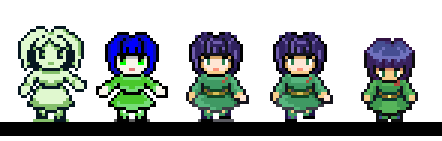
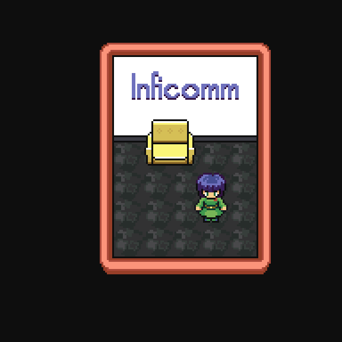

2025-08-02 -> 2026-04-12
A lot of stuff has happened in my life, and working on the art became too stressful, too painful, too difficult.
My fiancée asked me one day why I haven't worked on the game in the last half a year, and I told her "If it was pleasant, I would". It is a bitter pill to swallow, and an opportunity to reflect on things: what made it unpleasant?
Perhaps, it is the quality standard I've set for myself. I felt like I could not work on the game without either using lots of energy (and there isn't much) or being disappointed with the results (which, too, drains). The lack of energy and free time is, surely, a large contributor, too.
Well, it's not like I haven't made any progress in the meantime. I have a draft of a script for a game done (and it ended up being a completely different game), and I am doodling the arts little by little. It's probably fair to think that the current game I'm working on is a spin-off the "cooking game", but maybe eventually two of them will merge together.
Originally I thought I'd make a Gameboy game, but I didn't enjoy the limitations of the engine this time. I slowly reworked the sprites for a 320x240 256 colours mode. When I was satisfied with one (animations and all!), I shared it with my friend who is a professional pixel artist working on super high profile games. She gave me lots of advice; most importantly, she pointed out at the broken perspective. The advice was so simple and so actionable that I don't really have anything to show in between the current sprite design and the previous version - it took only 20 minutes to redo it, and I don't have any intermediate save files. Magic.

I am drawing the tiles for the game, too, and it's difficult. First, the top-down perspective gives me trouble. Second, not being able to perceive colours well often results in colours that are too intense. Third, I don't want to overcomplicate the art; if something looks ugly, I can fix it later. Here is a little spoiler:
